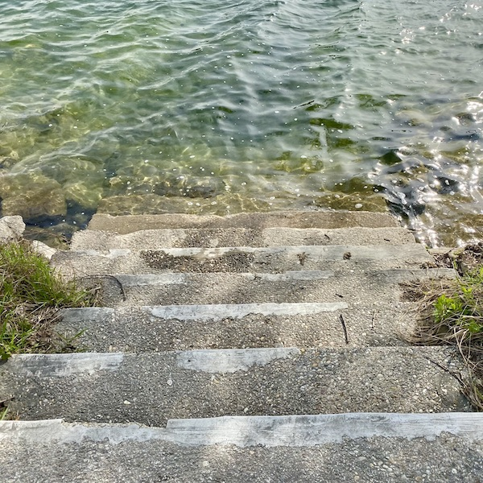

🤽🏻‍♂️ Swimming
🇫🇷 Ally
🇨🇿
Aquapalace Prague
🇫🇷 Aubazat
🇩🇪
Bad Ems
🇩🇪
Bad Schandau
🇩🇪
Baden-Baden
🇺🇸
Baker Beach
🇫🇷 Blassac
🇩🇪
Blaue Lagune
🇨🇿
Blažejský RybnÎk
🇫🇷 Cerzaguet
🇫🇷 Chanteuges
🇫🇷 Chazieux
🇺🇸
Cheat River
🇫🇷 Chillac
🇺🇸
Congamond Lakes
🇺🇸 Conquest Road
🇫🇷 Cronce
🇫🇷 Croncelorbe

🇦🇹
Dechantlacke
🇸🇰
DelfÎn
🇺🇸
Devil’s Slide
🇦🇹
Donauinsel
🇺🇸 Dublin Pond
🇺🇸
Eureka
🇩🇪
Europabrücke
🇫🇷 Falaise de Blot
🇪🇬
Fatnas Island
🇮🇸 Fjaðrá
🇮🇸
Flúðir
🇺🇸 Fort Foster
🇫🇷 Fraisse
🇺🇸
Green Lane Reservoir
🇮🇹
Grimaldi
🇩🇪
Großer Brombachsee
🇩🇪
Großer Müggelsee
🇩🇪
Großwelzheimer Badzee
🇺🇸 Guard Shore
🇳🇱
Hoek van Holland
🇱🇺
Hotel du Commerce
🇮🇸
Hreppslaug
🇦🇹
Hütteldorfer Bad
🇮🇸 Hveragerði
🇺🇸 Iroquois Springs
🇦🇹
Jörgerbad
🇨🇿
Kamenný RybnÎk
🇳🇱
Katwijk aan Zee
🇳🇱
Kijkduin
🇰🇪 Kileleshwa
🇮🇸
Kirkjubæjarklaustur
🇫🇷 La Vialette
🇫🇷 Laboue
🇫🇷 Lavoûte-Chillac
🇺🇸
Lake Chaubunagungamaug
🇺🇸
Lake Lauderdale
🇺🇸 Lake Minisink
🇺🇸 Lake Quinault
🇫🇷 Lavoute-Chillac
🇫🇷 Le Chambon
🇫🇷
Le Riad
🇺🇸
Leaser Lake
🇫🇷 Les Îles
🇫🇷 Lomenède
🇩🇪
Luisen Brunnen
🇱🇺
Mondorf-les-Bains
🇺🇸 Monmouth Beach
🇺🇸
Mountain Lake
🇨🇿
NovobystÅ™ický RybnÎk
🇺🇸
Oquaga Lake
🇳🇱
Overbosch
🇵🇱
Pałac Saturna
🇫🇷
Piscine Roger le Gall
🇪🇸
Piscinas Bernat Picornell
🇺🇸
Potomac River
🇫🇷 Prades
🇺🇸 Quality Inn Mount Vernon
🇺🇸
Rahway River
🇺🇸 Riga Lake
🇫🇷 Ron du Crouzet
🇺🇸
Rowlesburg
🇺🇸 San Gregorio Creek
🇳🇱
Scheveningen
🇮🇸
Seljavallalaug
🇺🇸
Seneca Lake
🇩🇪
Singliser See
ğŸ‡ğŸ‡·
Slano
🇫🇷 St-Arcons-d’Allier
🇫🇷 St-Cirgues
🇫🇷 St-Ilpize
🇫🇷 St-Julien-des-Chazes
🇺🇸 Stone Lake
🇫🇷
Sun City
🇫🇷 Tapon
🇦🇹
Therme Wien
🇧🇪
Thermae Boetfort
🇧🇪
Thermen Mineraal
🇧🇪
Thermen R
🇬🇷
Thessaloniki
🇺🇸
Tuckahoe State Park
🇺🇸 Watergarden
🇺🇸
Youghiogheny Lake
🇳🇱
Zandvoort aan Zee
🇳🇱
Zuiderbad
🇨🇿
Zvikov Castle
🇩🇪
Borkum
🇧🇪
Bredene
🇫🇮
Seurasaarenranta
🇳🇴
Svartkulp
🇫🇮
Yrjönkatu Swimming Hall


{kind=link}
{kind=link}
{kind=link}
{kind=link}
{kind=link}
{kind=link}
{kind=link}
{kind=link}
{kind=link}
{kind=link}
{kind=link}
{kind=link}
{kind=link}
{kind=link}
{kind=link}
{kind=link}
{kind=link}
{kind=link}
{kind=link}
{kind=link}
{kind=link}
{kind=link}
{kind=link}
{kind=link}
{kind=link}
{kind=link}
{kind=link}
{kind=link}
{kind=link}
{kind=link}
{kind=link}
{kind=link}
{kind=link}
{kind=link}
{kind=link}
{kind=link}
{kind=link}
{kind=link}
{kind=link}